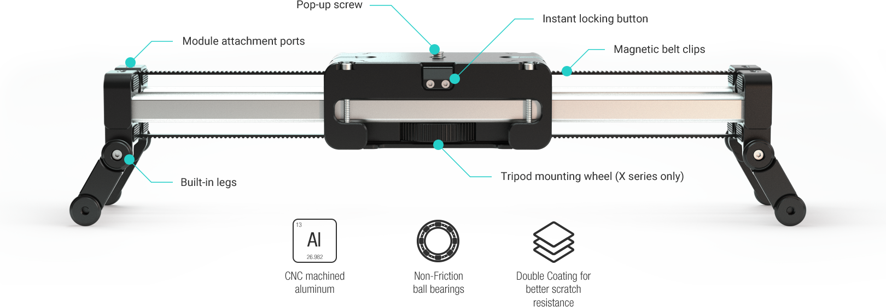

2 x Camera Travel
The rails of SliderPLUS move with the camera, giving you twice the amount of camera travel compared to regular sliders of its size.
2 x Dolly in/out range
SliderPLUS gives longer dolly in/out range compared to regular sliders. With its retracting rails you will get twice the amount of dolly in/out range. This extra range will give you more freedom while setting up your shots.
Steady Module
With Steady Module, even beginners can get perfectly smooth shots at first try. Steady Module eliminates shaky camera movement caused by human error even with heavy camera loads and at ultra low speeds and It does not require batteries or chargers!
Which one fits your filming style ?
X Long & X Short - Heavier cameras
M Long & M Short - More Affordable
All details thought out for a perfect workflow
Have it with you wherever you go
X Short and M Short models of SliderPLUS fit in a regular size camera backpack. This amazing portability makes it very easy for you to carry your SliderPLUS with you to most places. You will use it more often. You will get a faster return on your investment.

Ultra Silent Operation
Hand-pushing perfected
Steady Module
With Steady Module, even beginners can get perfectly smooth shots at first try. Steady Module eliminates shaky camera movement caused by human error even with heavy camera loads and at ultra low speeds and It does not require batteries or chargers! Using fluid dynamics, Steady Module evens out the slide speed, enabling you to achieve perfect and consistent slides.
Convert any motion into time-lapse or stop motion
No matter which edelkrone product you use to program your camera motion, you can easily convert your shot into time-lapse or stop motion with a single tap. The final video will be exactly the same as your original composition including the duration, slide, pan, tilt, focus and acceleration.
Introducing time-lapse 2.0 with Time-Warper and Motion-Warper
Now, you have the option to bend the speed of time in your time-lapses without affecting the speed of your camera motion. Or, you can alter the speed of your motion without affecting the speed of time.
Reviews & Behind-the-Scenes
"Filmmakers, timelapse creators, and tech nerds alike will fall in love with the great new features offered by this kit."
"Edelkrone has taken the wraps off its new SliderPLUS X and Motion Control system for mid-weight cameras, giving photographers and videographers a relatively simple way to get cinematic, smooth motion shots."
"The slider is capable of movement almost twice the length of the physical rails, thus making it an incredibly compact and portable system."